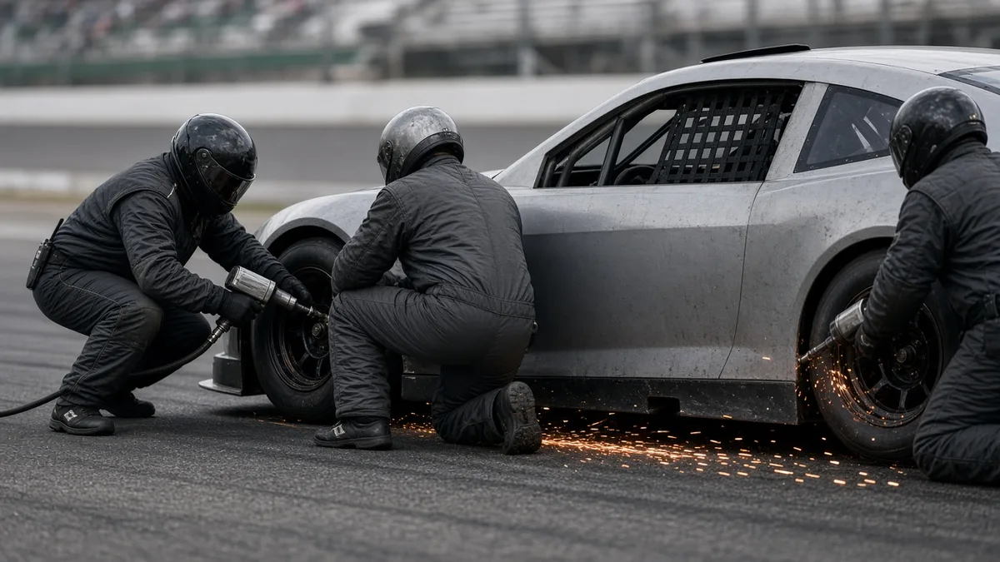

⏱️
🏆 Sports › NASCAR Cup championship at Homestead
NASCAR Cup championship at Homestead
By The Trends Incoming team
Kyle Larson, Christopher Bell and Denny Hamlin are the only drivers left for the 2026 Cup title. Larson leads by 67 points. Sunday Nov 8, 3 p.m. ET on NBC.
What's trending in NASCAR Cup championship at Homestead
NASCAR title down to three
Kyle Larson leads Christopher Bell by 67 points and Denny Hamlin by 70 going into Sunday's finale at Homestead (3 p.m. ET, NBC). Nine points clinches it for Larson.
The quick version
The 2026 NASCAR Cup Series title comes down to three drivers. After Sunday's race at Martinsville, only Kyle Larson, Christopher Bell and Denny Hamlin can still win the championship at Homestead-Miami Speedway on Sunday, Nov 8, at 3 p.m. ET on NBC, per NASCAR. Larson leads Bell by 67 points and Hamlin by 70, so he can clinch with as few as nine points, according to NASCAR's Chase Report.
| Race | Cup Series championship race, Homestead-Miami Speedway |
|---|---|
| When | Sun Nov 8, 2026, 3 p.m. ET (noon PT) |
| TV | NBC; pre-race coverage from 2 p.m. ET |
| Still eligible | Kyle Larson, Christopher Bell, Denny Hamlin |
| Gap | Larson +67 on Bell, +70 on Hamlin |
| Larson's number | 9 points, or 28th place with no stage points |
What happened at Martinsville
William Byron dominated Sunday's race at Martinsville Speedway, winning both stages and the race for his first victory of 2026. But he had already been eliminated from the title fight, so the win did not change the championship picture, Yahoo Sports reported.
The title contenders had quieter days. Larson lost a lap after an early strategy call and fought back to ninth. Hamlin finished sixth and Bell tenth, and neither scored stage points, so they barely cut into Larson's lead. Chase Briscoe (14th), Joey Logano (18th), Tyler Reddick (12th) and Ryan Blaney (35th, after contact with Josh Berry) all fell out of mathematical contention.
The championship math
This year's Chase is a points race: there's no four-driver, winner-takes-all final like in recent seasons. Whoever has the most points after Homestead is champion. With 13 of the 16 Chase drivers now out, the math is simple:
- Kyle Larson clinches by scoring nine points, whatever Bell and Hamlin do. If he scores no stage points, finishing 28th or better is enough, per NASCAR.
- Christopher Bell (-67) and Denny Hamlin (-70) both need a big day and real trouble for Larson. As Yahoo noted, even a win would not guarantee either of them the title.

Who the contenders are
Larson, 34, drives the No. 5 Hendrick Motorsports Chevrolet and is going for his third Cup championship. Bell, 31, drives the No. 20 Joe Gibbs Racing Toyota, and Hamlin, 45, drives the No. 11 Joe Gibbs Racing Toyota; neither has won a Cup title. For Hamlin, one of the sport's most successful drivers without a championship, Sunday may be one of his last real shots. The full field is on NASCAR's Homestead entry list.
How to watch
The race starts at 3 p.m. ET (2 p.m. CT, noon PT, 8 p.m. in the UK) on NBC, with pre-race coverage from 2 p.m. ET. Times are from NASCAR's championship weekend schedule. Homestead-Miami is a 1.5-mile oval south of Miami, and its worn surface usually rewards drivers who can run right against the wall.
What to watch for
- The early stages. If Larson scores stage points in the first two stages, he could all but lock up the title before the final run.
- Pit road. A penalty or a slow stop is the likeliest way for a 67-point lead to shrink.
- Spoilers. Byron, Logano, Blaney and the rest of the eliminated drivers are still racing for a win, and any of them could take points away from the contenders.
Quick answers
When is the NASCAR championship race in 2026?
Sunday, November 8, 2026, at 3 p.m. ET at Homestead-Miami Speedway in Florida.
What channel is the NASCAR championship on?
NBC, with pre-race coverage starting at 2 p.m. ET.
Who can win the 2026 NASCAR Cup title?
Only Kyle Larson, Christopher Bell and Denny Hamlin are still mathematically eligible.
What does Kyle Larson need to clinch?
Nine points. If he scores no stage points, a 28th-place finish or better clinches it.
Related in Sports
- Sun Oct 25, 2026 NHL Heritage Classic 2026
Canadiens at Jets outdoors in Winnipeg: time, TV and weather. - Tue Oct 27, 2026 World Series Game 4
Brewers up 3-0; Game 4 tonight at 8 ET on FOX. - Wed Oct 28, 2026 World Series Game 5
Brewers 4, Rays 1: Milwaukee clinches its first title. - Thu Oct 29, 2026 WNBA Finals Game 6
Dream 80, Valkyries 69: series tied 3-3. - Fri Oct 30, 2026 NBA Cup 2026
Schedule, standings and how to watch every round. - Fri Oct 30, 2026 Brewers win the World Series
First title in franchise history; parade today at 10 a.m. CT. - Sat Oct 31, 2026 Valkyries win WNBA title
68-63 in Game 7; Williams Finals MVP. - Ongoing NBA 2026-27: where to watch
Every national TV and streaming option this season. - Ongoing NHL 2026-27: where to watch
National TV and streaming for the NHL season. - Ongoing World Series 2026
Game schedule and how to watch. - Ongoing WNBA Finals 2026
Finals schedule and how to watch.